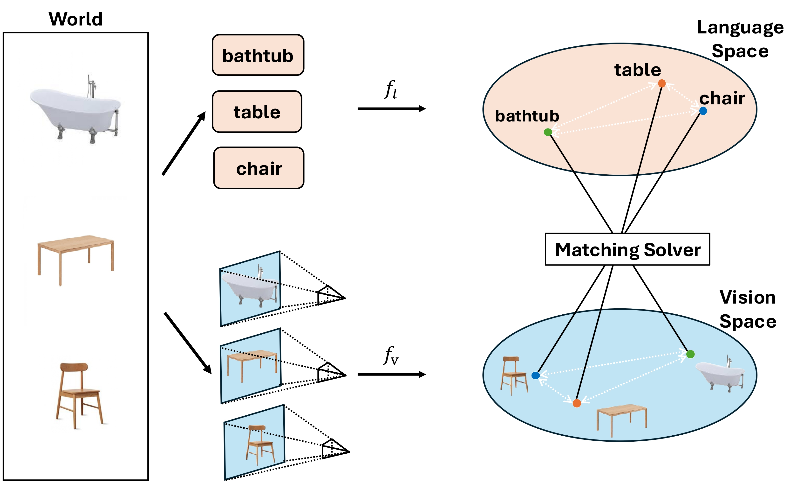

PlatonicNav:
Unveiling Semantic Correspondence in
Navigation with Platonic Topological Maps
TL;DR: PlatonicNav enables training-free embodied navigation through blind semantic matching between vision and language, unifying VLN and ObjNav using self-supervised visual representations.
Real World Evaluation: ObjNav
Demo 1: Pre-exploration
Demo 1: Navigation
Demo 2: Pre-exploration
Demo 2: Navigation
Demo 3: Pre-exploration
Demo 3: Navigation
Real World Evaluation: VLN
Find the Plant
Go to the Chair
Go to the Lamp
Method

PlatonicNav Pipeline. (a) Mapping: We construct Platonic Topological Map as a semantic scene graph, where image segments are used as object nodes, and edges are weighted by both geometric distance and semantic distance computed from vision embedding space. (b) Goal Selection: Given the natural-language instruction, we pairwise blind match language embeddings of goal object category and visual embedding of segment cluster, selecting the candidate goal nodes in Platonic Topological Map. (c) Execution: Given the map and candidate goal nodes, we compute the paths to the goal node which can be reached by lightest edge weight; the resulting path lengths are assigned to segmentation masks to form a PlatonicObject Costmap for control prediction.
Blind Matching of Vision and Language in Navigation

Blind matching of vision and language in navigation scene. Text and images are both abstractions of the same underlying world. Vision and language encoders fv and fl learn similar pairwise relations between concepts. We exploit these pairwise relations in a matching solver to recover valid correspondences between vision and language representations without requiring any paired data.
Citation
@techreport{long2026platonicnav,
title={PlatonicNav: Unveiling Semantic Correspondence in Navigation with Platonic Topological Maps},
author={Junlin Long and Zeyu Zhang and Xu Deng and Yiran Wang and Yue Yang and Luke Borgnolo and Maxwell Twelftree and Yang Zhao},
institution={Technical Report},
year={2026}
}